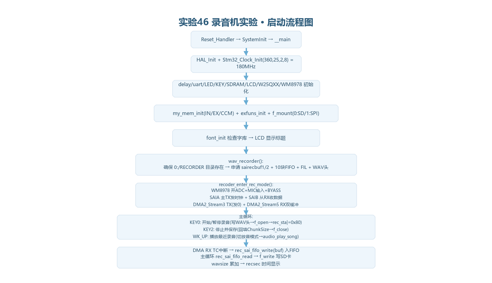
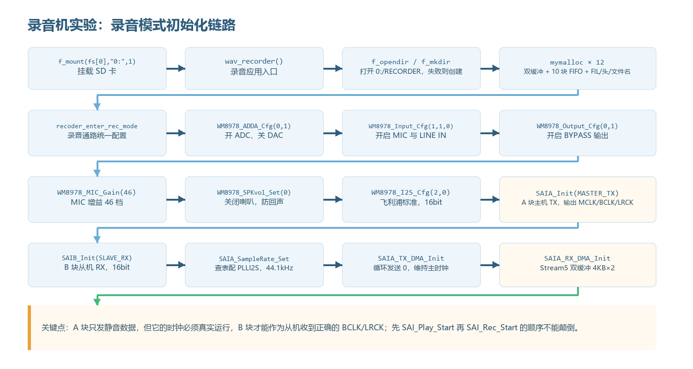
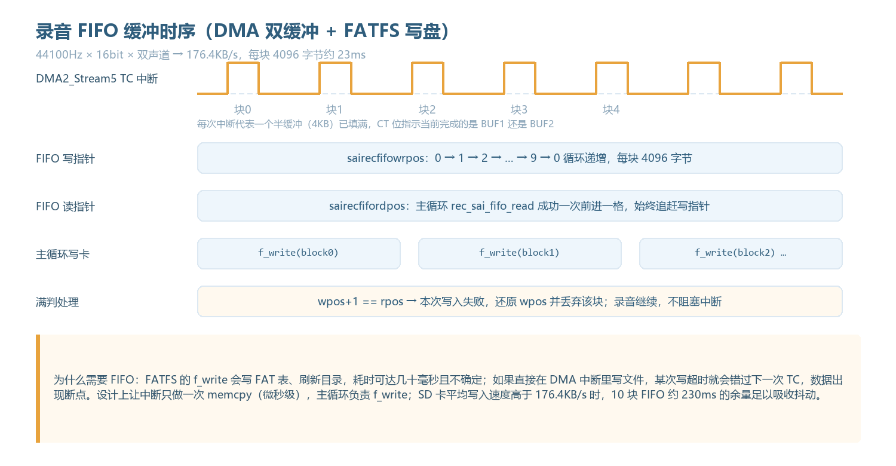
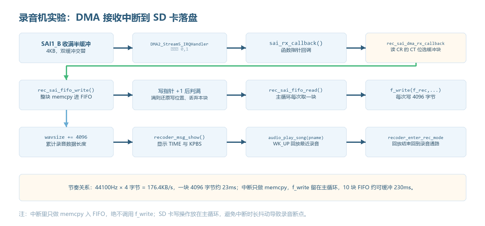

01 实验目标与硬件资源
实验46 与实验45 共用同一套 WM8978 + SAI 硬件，但数据方向完全反过来：播放是“内存 → SAI → Codec DAC”，录音是“Codec ADC → SAI → DMA → 内存 → SD 卡”。理解这一点，后面的每个函数就都能找到对应位置。
| 资源 | 型号 / 引脚 | 作用 |
|---|---|---|
| Codec | WM8978 | 开启 ADC 与 MIC 输入，把模拟音频变成 I2S 数据 |
| SAI Block A | SAI1_Block_A，PE2/3/4/5/6 | 主机 TX，只发送静音数据，用来产生 MCLK/BCLK/LRCK |
| SAI Block B | SAI1_Block_B | 从机 RX，在 A 块时钟下接收 ADC 数据 |
| DMA | DMA2_Stream5 / Channel0 | 外设到存储器，循环双缓冲，每块 4096 字节 |
| 存储 | SD 卡 + FatFS | 录音文件保存到 0:/RECORDER/RECxxxxx.wav |
| 按键 | KEY0 / KEY2 / KEY_UP | 录音暂停 / 停止保存 / 回放最近录音 |
| LCD | RGB 屏 | 显示文件名、录音时间与码率 |
02 工程目录与模块分工
| 目录 / 文件 | 关键符号 | 说明 |
|---|---|---|
| USER/main.c | main / wav_recorder | 初始化板级资源后进入录音主循环 |
| APP/recorder.c | wav_recorder / recoder_enter_rec_mode | FIFO、录音状态机、WAV 头、文件保存 |
| APP/audioplay.c | audio_play_song | WK_UP 回放最近一段录音 |
| HARDWARE/SAI/sai.c | SAIA_Init / SAIB_Init / SAIA_RX_DMA_Init | 双 Block 配置、采样率、双缓冲 DMA |
| HARDWARE/WM8978/wm8978.c | WM8978_ADDA_Cfg / WM8978_Input_Cfg | ADC、MIC 增益、BYPASS 输出 |
| SYSTEM/malloc | mymalloc / myfree | 从 SRAMIN 申请双缓冲与 10 块 FIFO |
| CORE/startup_stm32f429xx.s | DMA2_Stream5_IRQHandler | 向量表第 162 行登记接收中断入口 |
- 驱动层（sai.c / wm8978.c）只负责寄存器与 DMA 搬运，不碰文件系统。
- 应用层（recorder.c）负责 FIFO、按键状态机与 WAV 头，不直接配置寄存器。
- 文件系统（FatFS）只在主循环里被调用，绝不出现在中断里。
03 上电启动与 main 全貌

int main(void)
{
HAL_Init(); // HAL 初始化 + SysTick 1ms
Stm32_Clock_Init(360,25,2,8); // 180MHz
delay_init(180); // 延时函数按 180MHz 校准
uart_init(115200); // 串口打印
LED_Init();
KEY_Init();
SDRAM_Init(); // 外部内存池依赖
LCD_Init();
W25QXX_Init(); // 字库芯片
WM8978_Init(); // 软复位 + 通用寄存器
WM8978_HPvol_Set(40,40); // 耳机音量 40/63
WM8978_SPKvol_Set(50); // 喇叭音量 50/63
my_mem_init(SRAMIN);
my_mem_init(SRAMEX);
my_mem_init(SRAMCCM);
exfuns_init(); // FatFS 工作区
f_mount(fs[0],"0:",1); // SD 卡
f_mount(fs[1],"1:",1); // SPI FLASH
POINT_COLOR=RED;
while(font_init()) // 字库自检，失败则闪烁提示
{
LCD_ShowString(30,50,200,16,16,"Font Error!");
delay_ms(200);
LCD_Fill(30,50,240,66,WHITE);
delay_ms(200);
}
Show_Str(30,40,200,16,"阿波罗STM32F4/F7开发板",16,0);
Show_Str(30,60,200,16,"录音机实验",16,0);
Show_Str(30,80,200,16,"正点原子@ALIENTEK",16,0);
Show_Str(30,100,200,16,"2016年1月19日",16,0);
while(1)
{
wav_recorder(); // 录音应用主循环
}
}
注意 WM8978_SPKvol_Set(50) 只在开机时设置一次；进入录音模式后，recoder_enter_rec_mode 会再次把喇叭音量设为 0，避免麦克风拾取喇叭声音形成啸叫。
- 把时钟、串口、LCD、字库、SD 卡这些“基础设施”准备好。
- 初始化 WM8978 与内存池，为录音文件与缓冲区准备空间。
- 进入
while(1) wav_recorder()，之后所有逻辑都在应用层。
04 启动文件与向量表
__Vectors DCD __initial_sp ; 初始 MSP，取自栈顶 DCD Reset_Handler ; 复位向量，第 2 个字 DCD NMI_Handler DCD HardFault_Handler ... DCD DMA2_Stream3_IRQHandler ; 第 153 行：SAI TX DMA ... DCD DMA2_Stream5_IRQHandler ; 第 162 行：SAI RX DMA ... DCD SAI1_IRQHandler ; 第 181 行：本实验未使用
Reset_Handler PROC
EXPORT Reset_Handler [WEAK]
IMPORT SystemInit
IMPORT __main
LDR R0, =SystemInit
BLX R0 ; 先做最基础的时钟/FPU 设置
LDR R0, =__main
BX R0 ; C 库完成 scatter load 与 bss 清零
ENDP
启动文件里 DMA2_Stream5_IRQHandler 与 SAI1_IRQHandler 都是 [WEAK] 弱符号。本实验在 sai.c 里重新实现了 DMA2_Stream5_IRQHandler，链接时强符号覆盖弱符号；而 SAI1 中断没有使能，所以 SAI1_IRQHandler 始终是默认死循环。
- SAI 的 RXNE 是“每个样本触发一次”，44.1kHz 下中断过密。
- DMA 的 TC 是“每 4096 字节触发一次”，约 23ms 一次，开销可接受。
- 因此只需在向量表里保证
DMA2_Stream5_IRQHandler指向自己的实现。
05 SystemInit 与 HAL_Init
void SystemInit(void)
{
#if (__FPU_PRESENT == 1) && (__FPU_USED == 1)
SCB->CPACR |= ((3UL << 10*2)|(3UL << 11*2)); // 开 CP10/CP11，启用 FPU
#endif
RCC->CR |= (uint32_t)0x00000001; // 先回到 HSI 默认时钟
...
}
void Stm32_Clock_Init(u32 plln,u32 pllm,u32 pllp,u32 pllq)
{
__HAL_RCC_PWR_CLK_ENABLE();
__HAL_PWR_VOLTAGESCALING_CONFIG(PWR_REGULATOR_VOLTAGE_SCALE1); // 电压级别 1
RCC_OscInitStructure.OscillatorType=RCC_OSCILLATORTYPE_HSE;
RCC_OscInitStructure.HSEState=RCC_HSE_ON; // 25MHz 外部晶振
RCC_OscInitStructure.PLL.PLLSource=RCC_PLLSOURCE_HSE;
RCC_OscInitStructure.PLL.PLLM=pllm; // 25
RCC_OscInitStructure.PLL.PLLN=plln; // 360 → VCO 360MHz
RCC_OscInitStructure.PLL.PLLP=pllp; // 2 → SYSCLK 180MHz
RCC_OscInitStructure.PLL.PLLQ=pllq; // 8 → 45MHz 给 USB/SDIO
HAL_RCC_OscConfig(&RCC_OscInitStructure);
HAL_PWREx_EnableOverDrive(); // 180MHz 必须开 Over-Drive
RCC_ClkInitStructure.AHBCLKDivider=RCC_SYSCLK_DIV1; // HCLK 180MHz
RCC_ClkInitStructure.APB1CLKDivider=RCC_HCLK_DIV4; // APB1 45MHz
RCC_ClkInitStructure.APB2CLKDivider=RCC_HCLK_DIV2; // APB2 90MHz
HAL_RCC_ClockConfig(&RCC_ClkInitStructure,FLASH_LATENCY_5); // 5WS
}
HAL_Init() 在 main 的第一行调用，它设置 NVIC 优先级分组为 4 位抢占、配置 SysTick 每 1ms 产生一次中断，并调用 HAL_MspInit。之后 HAL_Delay 与 HAL_GetTick 才有意义；而 delay_us 仍使用 SysTick->VAL 轮询，不依赖中断。
- 先开 PWR 时钟并设置电压级别，否则 Over-Drive 无法开启。
- 再开 HSE 与 PLL，PLL 稳定后才能切换 SYSCLK 源。
- 最后设置 AHB/APB 分频与 Flash 等待周期，顺序反了会瞬间跑飞。
06 时钟树与 SAI 时钟源
| 时钟 | 来源与分频 | 频率 |
|---|---|---|
| HSE | 外部晶振 | 25MHz |
| PLL VCO | 25MHz × 360 / 25 | 360MHz |
| SYSCLK / HCLK | VCO / 2 | 180MHz |
| APB1 | HCLK / 4 | 45MHz |
| APB2 | HCLK / 2 | 90MHz |
| PLLI2S（SAI） | 25MHz/25 × 429 / 2 / 19 | 11.2896MHz |
| SAI MCLK | PLLI2S，MCKDIV=0 | 11.2896MHz |
u8 SAIA_SampleRate_Set(u32 samplerate)
{
u8 i=0;
RCC_PeriphCLKInitTypeDef RCCSAI1_Sture;
for(i=0;i<(sizeof(SAI_PSC_TBL)/10);i++) // 表项 5 个 u16 = 10 字节
{
if((samplerate/10)==SAI_PSC_TBL[i][0])break; // 44100/10 = 4410
}
if(i==(sizeof(SAI_PSC_TBL)/10))return 1; // 不支持的采样率
RCCSAI1_Sture.PeriphClockSelection=RCC_PERIPHCLK_SAI_PLLI2S;
RCCSAI1_Sture.PLLI2S.PLLI2SN=(u32)SAI_PSC_TBL[i][1]; // 429
RCCSAI1_Sture.PLLI2S.PLLI2SQ=(u32)SAI_PSC_TBL[i][2]; // 2
RCCSAI1_Sture.PLLI2SDivQ=SAI_PSC_TBL[i][3]+1; // HAL 内部会减 1，这里补回
HAL_RCCEx_PeriphCLKConfig(&RCCSAI1_Sture);
__HAL_RCC_SAI_BLOCKACLKSOURCE_CONFIG(RCC_SAIACLKSOURCE_PLLI2S);
__HAL_SAI_DISABLE(&SAI1A_Handler);
SAI1A_Handler.Init.AudioFrequency=samplerate; // 设置 44.1kHz
HAL_SAI_Init(&SAI1A_Handler);
SAIA_DMA_Enable();
__HAL_SAI_ENABLE(&SAI1A_Handler);
return 0;
}
采样率表中 44.1kHz 对应 {4410,429,2,18,0}：PLLI2SN=429、PLLI2SQ=2、PLLI2SDivQ 写入 18+1、MCKDIV=0。于是 MCLK = 25/25 × 429 / 2 / 19 = 11.2896MHz，再按 Fs = SAI_CK_x / 256（MCKDIV=0）得到 44100Hz。
- 表里存的是“采样率 / 10”，直接拿 44100 比较永远匹配不上。
- HAL 会在
PLLI2SDivQ赋值时减 1，所以表值要先加 1。 - 改采样率必须重新
HAL_SAI_Init，否则帧时钟仍是旧分频。
07 WM8978 录音通路与双 Block 配置

void recoder_enter_rec_mode(void)
{
WM8978_ADDA_Cfg(0,1); // 开 ADC，关 DAC
WM8978_Input_Cfg(1,1,0); // 开启 MIC 与 LINE IN
WM8978_Output_Cfg(0,1); // 开启 BYPASS 输出
WM8978_MIC_Gain(46); // MIC 增益 46 档
WM8978_SPKvol_Set(0); // 关闭喇叭，防回声
WM8978_I2S_Cfg(2,0); // 飞利浦标准，16bit
SAIA_Init(SAI_MODEMASTER_TX,SAI_CLOCKSTROBING_RISINGEDGE,SAI_DATASIZE_16);
SAIB_Init(SAI_MODESLAVE_RX,SAI_CLOCKSTROBING_RISINGEDGE,SAI_DATASIZE_16);
SAIA_SampleRate_Set(REC_SAMPLERATE); // 44100Hz
SAIA_TX_DMA_Init((u8*)&saiplaybuf[0],(u8*)&saiplaybuf[1],1,1);
__HAL_DMA_DISABLE_IT(&SAI1_TXDMA_Handler,DMA_IT_TC); // 发送不需要中断
SAIA_RX_DMA_Init(sairecbuf1,sairecbuf2,SAI_RX_DMA_BUF_SIZE/2,1);
sai_rx_callback=rec_sai_dma_rx_callback; // 挂接接收回调
SAI_Play_Start(); // 先让 A 块输出时钟
SAI_Rec_Start(); // 再让 B 块开始接收
recoder_remindmsg_show(0);
}
/* SAIB_Init 的关键差异：同步从机 + 使能 DMA */ SAI1B_Handler.Instance=SAI1_Block_B; SAI1B_Handler.Init.AudioMode=SAI_MODESLAVE_RX; // 从机接收 SAI1B_Handler.Init.Synchro=SAI_SYNCHRONOUS; // 与 A 块同步，不自己产生时钟 SAI1B_Handler.Init.ClockStrobing=SAI_CLOCKSTROBING_RISINGEDGE; SAI1B_Handler.FrameInit.FrameLength=64; // 左右各 32 个 SCK SAI1B_Handler.FrameInit.ActiveFrameLength=32; SAI1B_Handler.SlotInit.SlotSize=SAI_SLOTSIZE_32B; SAI1B_Handler.SlotInit.SlotNumber=2; SAI1B_Handler.SlotInit.SlotActive=SAI_SLOTACTIVE_0|SAI_SLOTACTIVE_1; HAL_SAI_Init(&SAI1B_Handler); SAIB_DMA_Enable(); // HAL 未提供，手写 CR1 bit17 __HAL_SAI_ENABLE(&SAI1B_Handler);
录音时 A 块的 TX DMA 只循环发送 saiplaybuf[2]={0,0}，数据本身没有意义，但 SAI 必须处于“已启动”状态才会输出 MCLK/BCLK/LRCK。B 块配置为 SAI_SYNCHRONOUS 从机，直接用 A 块的时钟采样，因此两块的帧长、槽宽、位深必须完全一致。
- A 块是时钟源，先启动它，BCLK/LRCK 才会稳定输出。
- B 块是同步从机，时钟未到位就启动会采到错位数据。
- 停止时顺序相反：先
SAI_Rec_Stop，再SAI_Play_Stop。
08 录音时序与 DMA 双缓冲

void SAIA_RX_DMA_Init(u8* buf0,u8 *buf1,u16 num,u8 width)
{
__HAL_RCC_DMA2_CLK_ENABLE();
__HAL_LINKDMA(&SAI1B_Handler,hdmarx,SAI1_RXDMA_Handler);
SAI1_RXDMA_Handler.Instance=DMA2_Stream5; // 数据流 5
SAI1_RXDMA_Handler.Init.Channel=DMA_CHANNEL_0;
SAI1_RXDMA_Handler.Init.Direction=DMA_PERIPH_TO_MEMORY; // 外设 → 内存
SAI1_RXDMA_Handler.Init.PeriphInc=DMA_PINC_DISABLE; // SAI DR 固定地址
SAI1_RXDMA_Handler.Init.MemInc=DMA_MINC_ENABLE; // 内存递增
SAI1_RXDMA_Handler.Init.Mode=DMA_CIRCULAR; // 循环模式
SAI1_RXDMA_Handler.Init.Priority=DMA_PRIORITY_MEDIUM; // 中等优先级
HAL_DMA_DeInit(&SAI1_RXDMA_Handler);
HAL_DMA_Init(&SAI1_RXDMA_Handler);
HAL_DMAEx_MultiBufferStart(&SAI1_RXDMA_Handler,
(u32)&SAI1_Block_B->DR,(u32)buf0,(u32)buf1,num); // M0AR/M1AR 双缓冲
__HAL_DMA_DISABLE(&SAI1_RXDMA_Handler);
delay_us(10); // 防 -O2 优化时序问题
__HAL_DMA_CLEAR_FLAG(&SAI1_RXDMA_Handler,DMA_FLAG_TCIF1_5);
__HAL_DMA_ENABLE_IT(&SAI1_RXDMA_Handler,DMA_IT_TC); // 只开传输完成中断
HAL_NVIC_SetPriority(DMA2_Stream5_IRQn,0,1);
HAL_NVIC_EnableIRQ(DMA2_Stream5_IRQn);
}
u8 rec_sai_fifo_write(u8 *buf)
{
u16 i;
u8 temp=sairecfifowrpos; // 记住旧写位置，便于回滚
sairecfifowrpos++;
if(sairecfifowrpos>=SAI_RX_FIFO_SIZE)sairecfifowrpos=0; // 环形归零
if(sairecfifordpos==sairecfifowrpos)
{
sairecfifowrpos=temp; // 满了：还原写位置
return 1; // 本次写入失败
}
for(i=0;i<SAI_RX_DMA_BUF_SIZE;i++)
sairecfifobuf[sairecfifowrpos][i]=buf[i]; // 整块 4KB memcpy
return 0;
}
SAIA_RX_DMA_Init(sairecbuf1,sairecbuf2,SAI_RX_DMA_BUF_SIZE/2,1) 中第三个参数是“传输次数”，因为位宽选 16 位，所以 4096 字节要写成 2048 次。每个缓冲 4096 字节，按 44.1kHz、16bit、双声道计算约 23ms 填满一次，这就是中断节拍。
- DMA 双缓冲解决“中断处理期间数据往哪写”：一块在被 CPU 拷贝，另一块继续接收。
- 10 块 FIFO 解决“SD 卡写入时间不确定”：最多可缓存约 230ms 音频。
- FIFO 满时丢弃新块而不是覆盖旧块，保证已排队数据的连续性。
09 中断链路：DMA2_Stream5

void DMA2_Stream5_IRQHandler(void)
{
if(__HAL_DMA_GET_FLAG(&SAI1_RXDMA_Handler,DMA_FLAG_TCIF1_5)!=RESET) // 传输完成
{
__HAL_DMA_CLEAR_FLAG(&SAI1_RXDMA_Handler,DMA_FLAG_TCIF1_5); // 先清标志
if(sai_rx_callback!=NULL)sai_rx_callback(); // 再回调应用层
}
}
void rec_sai_dma_rx_callback(void)
{
if(rec_sta==0X80) // bit7=1：正在录音
{
if(DMA2_Stream5->CR&(1<<19)) // CT 位：当前目标缓冲
rec_sai_fifo_write(sairecbuf1); // CT=1 表示刚完成 BUF1
else
rec_sai_fifo_write(sairecbuf2); // 否则是 BUF2
}
}
双缓冲模式下，DMA 的 CT 位（DMA_SxCR bit19）指示“下一次传输的目标是 M0AR 还是 M1AR”。当 TC 中断发生时，刚填满的正是 CT 指向的反面：CT=1 说明下一块要去 BUF1，因此刚完成的是 BUF1。这个判断必须与 MultiBufferStart 的 buf0/buf1 顺序一致，否则两块数据会写反。
回调里只做 memcpy 级别的整块拷贝（4096 字节，微秒级），绝不调用 f_write。文件系统写卡放在主循环，避免 FAT 表刷新耗时 unpredictable 导致下一次 TC 丢失。
- 先清 TC 标志再回调，否则退出中断后立即再次进入。
- 不在中断里做文件系统操作、浮点打印或长延时。
- 用
rec_sta判断是否真的在录音，暂停时也要继续清标志。
10 主循环、按键与录音状态机
case KEY2_PRES: // STOP&SAVE if(rec_sta&0X80) // 确实录过音 { rec_sta=0; wavhead->riff.ChunkSize=wavsize+36; // 回填总长度 wavhead->data.ChunkSize=wavsize; // 回填数据长度 f_lseek(f_rec,0); // 回到文件头 f_write(f_rec,(const void*)wavhead,sizeof(__WaveHeader),&bw); f_close(f_rec); // 关闭文件，目录项落盘 wavsize=0; sairecfifordpos=0; // FIFO 读写指针归零 sairecfifowrpos=0; } rec_sta=0; recsec=0; LED1=1; // 熄灭暂停指示 break;
case KEY0_PRES: // REC/PAUSE if(rec_sta&0X01) // 原本暂停 → 继续 { rec_sta&=0XFE; }else if(rec_sta&0X80) // 正在录音 → 暂停 { rec_sta|=0X01; }else // 未开始 → 新建文件 { recsec=0; recoder_new_pathname(pname); // 0:RECORDER/RECxxxxx.wav recoder_wav_init(wavhead); // 初始化 44 字节头 res=f_open(f_rec,(const TCHAR*)pname,FA_CREATE_ALWAYS|FA_WRITE); if(res) { rec_sta=0; rval=0XFE; // 建文件失败，多半是没插卡 }else { f_write(f_rec,(const void*)wavhead,sizeof(__WaveHeader),&bw); recoder_msg_show(0,0); rec_sta|=0X80; // bit7：开始录音 } } if(rec_sta&0X01)LED1=0; // DS1 亮 = 暂停 else LED1=1; break;
| rec_sta 位 | 含义 | 影响 |
|---|---|---|
| bit7 = 1 | 已经开启录音 | DMA 回调才会把数据写入 FIFO |
| bit0 = 1 | 暂停录音 | DS1 点亮；FIFO 仍被读空，但不产生新数据 |
| 0x00 | 空闲 | 回调直接返回，不拷贝 |
暂停的实现方式很关键：并没有关闭 SAI 或 DMA，只是让回调停止入队。这样时钟持续运行，继续录音时不会出现 Codec 重新同步的爆音；代价是暂停期间的数据被直接丢弃。
- 空闲 → 录音：KEY0 建文件、写头、置 bit7。
- 录音 → 暂停：KEY0 置 bit0，DS1 亮。
- 暂停 → 录音：KEY0 清 bit0，继续向同一文件追加。
- 录音/暂停 → 空闲：KEY2 回填头、关闭文件、清指针。
11 WAV 头回填与文件保存
void recoder_wav_init(__WaveHeader* wavhead)
{
wavhead->riff.ChunkID=0X46464952; // "RIFF"
wavhead->riff.ChunkSize=0; // 停止时才算
wavhead->riff.Format=0X45564157; // "WAVE"
wavhead->fmt.ChunkID=0X20746D66; // "fmt "
wavhead->fmt.ChunkSize=16; // PCM 格式块长度
wavhead->fmt.AudioFormat=0X01; // 1 = PCM
wavhead->fmt.NumOfChannels=2; // 双声道
wavhead->fmt.SampleRate=REC_SAMPLERATE; // 44100
wavhead->fmt.ByteRate=wavhead->fmt.SampleRate*4; // 176400 B/s
wavhead->fmt.BlockAlign=4; // 2 通道 × 2 字节
wavhead->fmt.BitsPerSample=16; // 16bit
wavhead->data.ChunkID=0X61746164; // "data"
wavhead->data.ChunkSize=0; // 停止时回填
}
/* KEY2 停止保存：回填头 + 关闭文件 */ wavhead->riff.ChunkSize=wavsize+36; // 44 字节头 - 8 字节 RIFF 标识 wavhead->data.ChunkSize=wavsize; // 纯 PCM 数据长度 f_lseek(f_rec,0); // 文件指针移回 0 f_write(f_rec,(const void*)wavhead,sizeof(__WaveHeader),&bw); f_close(f_rec); // 同步目录项，防止拔出卡后文件 0 字节
void recoder_new_pathname(u8 *pname)
{
u8 res;
u16 index=0;
while(index<0XFFFF)
{
sprintf((char*)pname,"0:RECORDER/REC%05d.wav",index);
res=f_open(ftemp,(const TCHAR*)pname,FA_READ); // 试着打开
if(res==FR_NO_FILE)break; // 不存在 = 可用
index++;
}
}
文件名从 REC00000.wav 递增到 REC65534.wav，用“尝试打开、返回 FR_NO_FILE 即空闲”的方式避免覆盖已有录音。注意该函数拼接的是 0:RECORDER/...，而目录创建用的是 0:/RECORDER，FatFS 对根目录下的写法都能识别，但阅读代码时要留意这一处差异。
- 开始录音时还不知道总长度，只能先写 ChunkSize=0 的占位头。
- 停止时用
f_lseek(f_rec,0)回到文件起点，覆盖这 44 字节。 - 不回填的话，PC 上播放器会认为数据长度为 0，文件“打不开”。
12 串口日志与录音信息
if(rec_sai_fifo_read(&pdatabuf)) // 主循环取到一块 { res=f_write(f_rec,pdatabuf,SAI_RX_DMA_BUF_SIZE,(UINT*)&bw); if(res) { printf("write error:%d\r\n",res); // 写卡失败，串口报错 } wavsize+=SAI_RX_DMA_BUF_SIZE; // 累计数据量 }else delay_ms(5); // 没数据就让出 CPU timecnt++; if((timecnt%20)==0)LED0=!LED0; // DS0 心跳 if(recsec!=(wavsize/wavhead->fmt.ByteRate)) // 秒数变化才刷新 { recsec=wavsize/wavhead->fmt.ByteRate; recoder_msg_show(recsec,wavhead->fmt.SampleRate* wavhead->fmt.NumOfChannels*wavhead->fmt.BitsPerSample); }
recoder_msg_show 把秒数拆成“分:秒”，码率按 采样率 × 通道数 × 位深 计算后除以 1000 显示为 kbps。以本实验参数为例：44100 × 2 × 16 = 1411200bps，即 1411kbps；换算成字节是 176400B/s，正好等于 WAV 头里的 ByteRate。
| 显示项 | 计算方式 | 本实验值 |
|---|---|---|
| TIME 分:秒 | wavsize / ByteRate | 每秒递增 1 |
| KPBS | Fs × 通道 × 位深 / 1000 | 1411 |
| DS0 | 每 20 次循环翻转 | 录音心跳 |
| DS1 | rec_sta&0x01 | 暂停时点亮 |
13 排错路径与验证清单
| 现象 | 最可能原因 | 验证方法 |
|---|---|---|
| 完全没有文件 | SD 卡未挂载或目录创建失败 | 看 f_mount 返回值；确认 0:/RECORDER 存在 |
| 文件 0 字节 | 没按 KEY2 停止，头未回填、文件未关闭 | 按 KEY2 后再拔卡；检查 f_close 是否执行 |
| 录音全是噪声 | MIC 增益过大或喇叭未静音 | 把 MIC_Gain(46) 调低；确认 SPKvol_Set(0) |
| 播放速度不对 | 采样率表配置错误 | 核对 SAI_PSC_TBL 的 4410 行与 WAV 头 SampleRate |
| 录音有断点 | FIFO 满或 SD 卡写入过慢 | 降低采样率、换高速卡；观察 rec_sai_fifo_write 返回值 |
| 回放没有声音 | 仍处于录音模式，喇叭音量为 0 | 确认 WK_UP 分支调用了 recoder_enter_play_mode |
| 左右声道错位 | 16bit 数据长度或槽宽不匹配 | 核对 WM8978_I2S_Cfg(2,0) 与 SAI_DATASIZE_16 |
- 先用
WM8978_ADDA_Cfg(0,1)+ BYPASS 输出，确认麦克风通路有声音。 - 再只启动 SAI 双 Block 与 DMA，串口打印 FIFO 写入次数，确认节拍正常。
- 然后录音 5 秒并按 KEY2 保存，用 PC 打开 WAV 验证头与时长。
- 最后测试暂停/继续、回放与长时间录音，观察是否丢块。
14 交互演示：录音控制
rec_sta|=0x80，再次按下只翻转 bit0；KEY2 在 bit7 有效时回填 WAV 头、执行 f_close，然后把 wavsize 与 FIFO 读写指针全部归零。